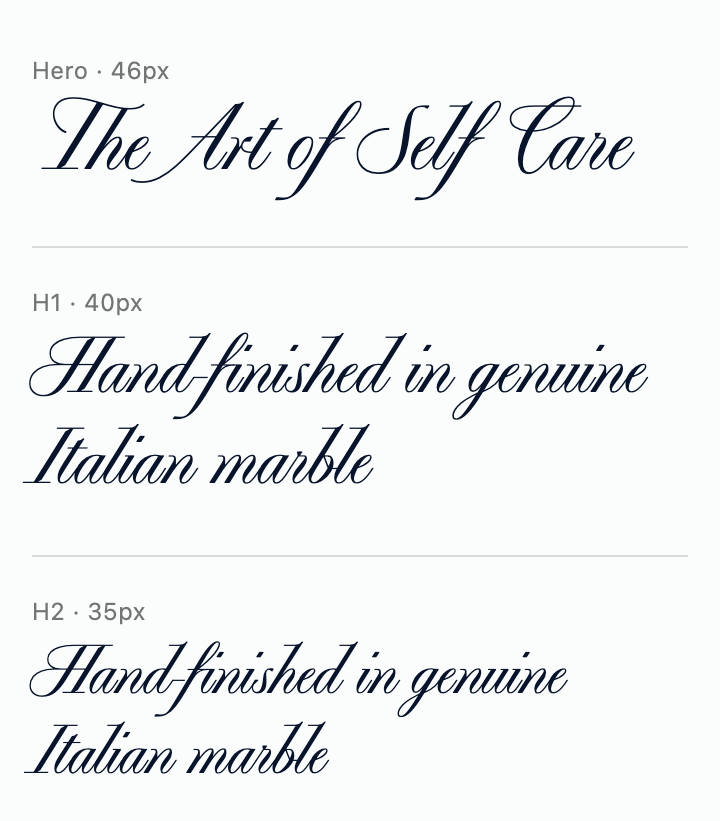
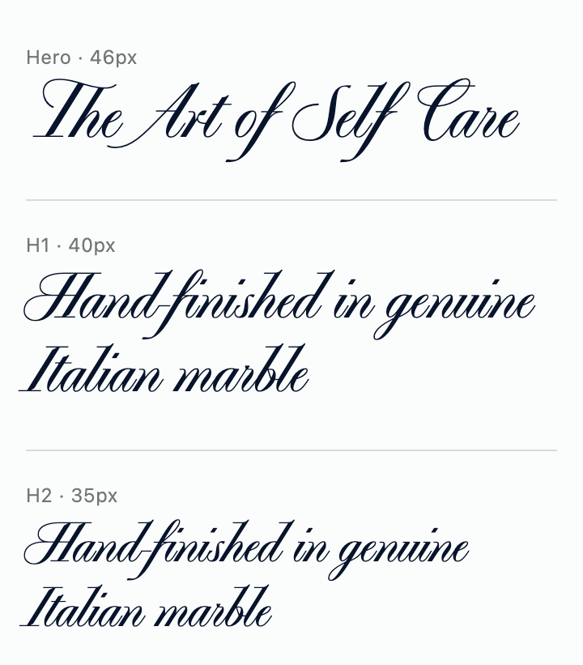

Type test · Mobile
PP Playground: Regular vs Medium
The same three headings in both weights, captured at the size they'd be on a 360px-wide phone, on the light background. Medium is slightly heavier, which can help the script hold up at smaller sizes.
360px mobile width · 1.15 heading scale · 1.15 line height · #08142B on #FBFCFC


On a computer, each image is shown at true mobile size. On a phone, the images shrink slightly to fit the screen.